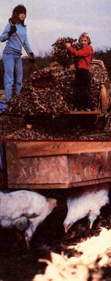

Money does grow on trees . . . or-rather-it sometimes falls off of them! The fact is-if you have a few rakes and a means of transportation-you can not only help your offspring (or yourself) collect some extra spending money, but also accumulate free fertilizer and mulch for your garden, and provide bedding for your animals, as well.
Leaf raking-as my children and I discovered last fall-is an easy-to-start and rewarding enterprise. Our initial season brought in (in addition to fertilizer, mulch, bedding, and cash) a cast-iron bathtub (which we made into a horse-watering tank) ... several pounds of shelled walnuts . . . and an incredible amount of good will from grateful older citizens.
How-you may wonder-did we become involved in our lawn-cleaning venture? Well-knowing that leaves contain calcium, magnesium, nitrogen, phosphorus, and potassium-I'd made yearly resolutions, for some time, to gather people's autumn "fallout" to use as fertilizer for our organic garden. But I never seemed to get around to the task, because (as any homesteader knows) there's always an endless list of chores to cope with in the fall.
Then last year we bought a horse ... and soon learned that we couldn't use old hay for bedding because the steed would eat the material! However, one livestock book mentioned leaves as an alternative . . . and since the beast was supposed to be my children's animal, it seemed only fitting that they help collect its bed-to-be. (In the back of my mind, I figured that the resulting ready supply of crushed leaves mixed with horse manure would make perfect compost for the garden and our commercial strawberry field.)
At first I thought we'd just scout for leaf piles that people had raked and bagged for the trash collector, and ask for permission to haul the heaps off. But, considering the price of gas, l decided we might as well offer to do the raking ourselves: That way, we'd earn a little money as a result of our leaf foraging, instead of spending it.
I wasn't sure whether there'd be a demand for our services-and didn't want to risk any cash on advertising-so I started our enterprise by making a trip to the local state job office. That, as it turned out, was all the "business drumming" that was necessary. We got our first customer on the following day, and from then on our fame spread by word of mouth.
Since we were new to the leaf-raking business, it was difficult to decide what to charge for our labor. Also, my co-workers were 13, 11, and 6 years of age (and I didn't know whether anyone would be willing to pay by the hour for a six-year-olds work), so we decided to charge by the job.
We averaged $10 per yard, and no one's complained about the cost yet. On the contrary, several people gave us more than we asked. ("You worked too hard to be paid so little!" one woman said.) And gifts such as the bathtub and the walnuts were thrown in, as bonuses, when people didn't think we'd earned enough.
There were other rewards, too .. . not the least of which was the gratitude of many of our "employers". The people who needed our services turned out to be, almost without exception, older folks who were no longer able to do the raking themselves but were disturbed by the leaves piling up on their lawns. ("I just want to thank you from the bottom of my heart!" one satisfied customer exclaimed after we had finished tidying up her yard.)
A lot of customers also told me how pleased they were to see that I was teaching my youngsters to work together. (That kind of compliment was a form of payment, too . .. especially since it seemed to me that my helpers sometimes groaned and squabbled more than was called for.)
Usually all my children came along, but if one or two of the youngsters couldn't make it, I just raked with whoever was free to help me. I simply took 50 cents per job to pay for gas for my Datsun pickup (we live four miles out of town) and split the rest of the earnings among whichever children worked that day . . . while my "share" was the leaves themselves. (I did put some restrictions on how the children used the cash I'd helped them earn, though: They were required to put half of the proceeds into their savings accounts, and use the remainder for clothes, Christmas gifts, or other items more worthy than candy or soft drinks.)
Our expenses weren't high. I bought two extra rakes at a close-out sale, but-since we needed them around the homestead anyway-I didn't include the price of the tools when estimating my business expenses. I also spent $2.00 to buy two boxes of large, heavy-duty leaf bags ... which we used and reused. Rather than buy a bag holder, we collected the leaves in an old garbage can, then pulled a bag over the top and up-ended the container to fill the sack.
The work itself wasn't easy. We came home dead tired and with stiff backs, and I soon learned that it was best to prepare a casserole before we left for a job . . . since we always returned hungry, but much too exhausted to cook.
J ust when we were so worn out that we thought we'd have to say no to the next request for our services, though, the work stopped as quickly as it had begun. It snowed, and the leaf-raking season was over . . . but not before it had provided us with plump savings accounts . . . mulch to cover the whole garden and the three-quarter-acre strawberry patch . .. enough extra gleanings to pack around the vegetables in the root cellar (which kept them "fresh as August") . . . plus plenty of clean bedding for the goat, geese, and chickens. (The poultry, especially, like to explore through the dry leaves, and we even saved several bagfuls to freshen up the henhouse during the winter . . . with still more left over for the outdoor scratching pens in the spring.)
And what about the beast that originally got us started on the leaf-raking enterprise? Well, we'll have to find that animal still another kind of bedding ... some horses, it seems, eat leaves too!
|
 Raking leaves is a great way to earn some spending money, and to provide warm, clean bedding for your livestock. |
|
|